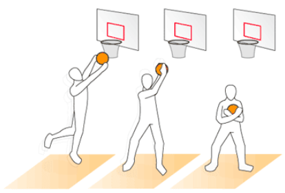

How to get a rebound correctly?
 A rebound is gained when the player's shot is missed. When you're trying to get a rebound, the key concept to try and get the ball is to jump as high as you can and also box out your opponent. Remember to spread your arms then jump towards the ball and grab it, also don't let go once you got it, pass the ball if you're guarded too tightly.
Start practicing how to rebound by first banging the basketball on the backboard, and try to grab the ball after it bangs. This could help you improve your rebounding skills.